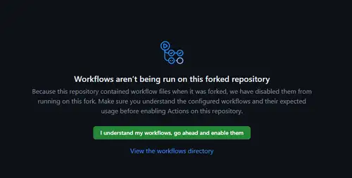
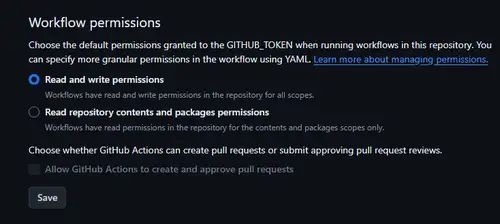

セットアップ
①フォーク
②ワークフローを有効化
- Actionsタブをクリックし、
I understand my workflows, go ahead and enable themをクリックします。

③権限の変更
- Settingsタブをクリックし、Actions→Generalへと進んでください。
- 下へスクロールし、Workflow permissionsの部分で、[Read and write permissions]を選択します。

④Constantsを変更
- Constants.pyを開き、以下の通りに設定していきます。 「設定が基本必要なもの」の部分をコメントどおりに設定していきます。
- それ以外は、必要に応じて設定してください。